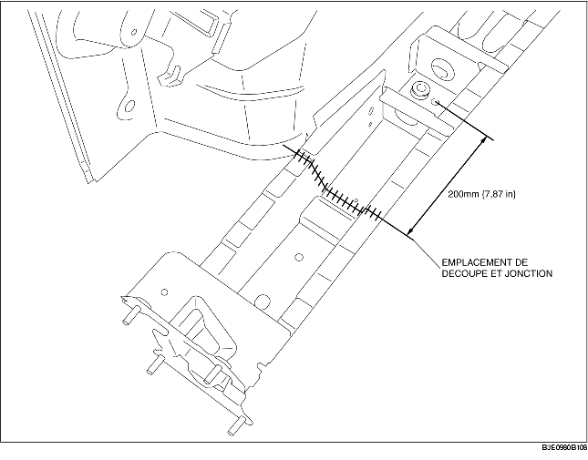

1. Découper les pièces nouvelles et actuelles au niveau de l'emplacement de la découpe et de la jonction et biseauter les pièces.
2. Pour découper et joindre la nouvelle partie, découper aux emplacements indiqués par la figure ci-dessous, puis biseauter les emplacements.
3. Au moment de reposer de nouvelles pièces, essayer les avec les actuelles, puis mesurer et ajuster la carrosserie pour qu'elle soit conforme aux dimensions standard.
4. Après avoir installé temporairement les nouvelles pièces, s'assurer que les pièces associées se mettent en place de manière appropriée.
